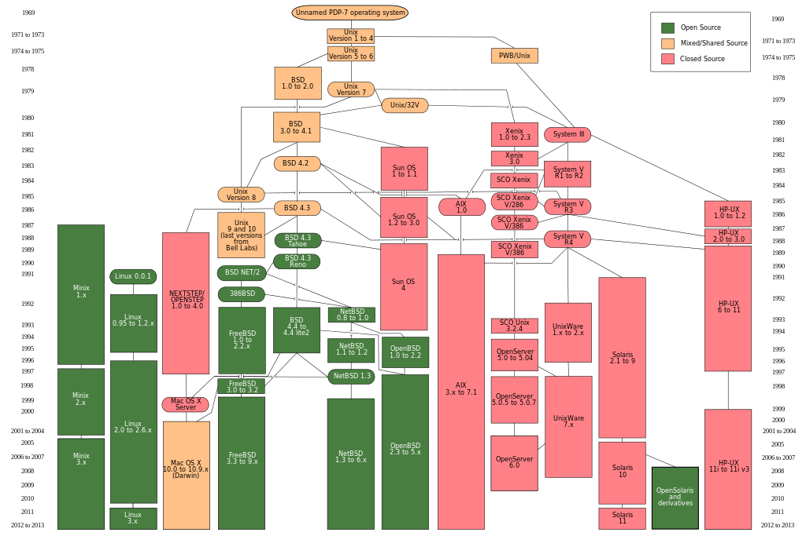

Cursus
Linux Basic - Ubuntu

i.s.m. Syntra Limburg
Me
Ludwig Heymbeeck
ludwigheymbeeck@gmail.com
@ludwigheymbeeck
https://github.com/ludwigheymbeeck
Overzicht cursus
- Achtergrond; Ubuntu installaties
- Basis Linux systeemconcepten
- Gebruik van GNOME/Unity
- Command-Line gereedschappen
- Werken met tekstbestanden op Ubuntu; Mail en Web
- Aanmaak en publiceren van documenten; andere Office Software
- Werken met Graphics en Multimedia
- Verbindingen maken met andere systemen
- Bestandsoverdracht en sharing op Ubuntu
- Software ontwikkeling op Ubuntu
Achtergrond van Ubuntu
- Linux is afgeleid van Unix
- Ubuntu is afgeleid van Linux
Geschiedenis

Geschiedenis (vereenvoudigd)

Ubuntu installatie
- Installeer VirtualBox: www.virtualbox.org
- Installeer Ubuntu: www.ubuntu.com
Linux Architecture
Linux Commands - More Info...
man <command>: all information about the command
<command> --help: available options for that command
e.g.: man ls
ls --help
Let's Code!
Geef volgende commando's in aan de prompt en probeer ze te begrijpen.
Experimenteer maar en stel vragen indien nodig:
echo hello world
passwd
date
hostname
arch
uname -a
dmesg | more(you may need to press q to quit)
uptime
who am i
who
id
last
finger
w
top (you may need to press q to quit)
echo $SHELL
man ls (you may need to press q to quit)
man who (you may need to press q to quit)
clear
cal 2000
cal 9 1752(do you notice anything unusual?)
bc -l(type quit or press Ctrl-d to quit)
echo 5+4 | bc -l
yes please(you may need to press Ctrl-c to quit)
time sleep 5
history
Linux Files and Directories
Gedeeltelijke structuur

Basic Linux - Typical Directories
| DIRECTORY |
TYPICAL CONTENTS |
| / |
The "root" directory |
| /bin |
Essential low-level system utilities |
| /usr/bin |
Higher-level system utilities and application programs |
| /sbin |
Superuser system utilities (for performing system administration tasks) |
| /lib |
Program libraries (collections of system calls that can be included
in programs by a compiler) for low-level system utilities |
| /usr/lib |
Program libraries for higher-level user programs |
| /tmp |
Temporary file storage space (can be used by any user) |
| /home |
User home directories containing personal file space for
each user. Each directory is named after the login of the user. |
| /etc |
System configuration and information files |
| /dev |
Hardware devices |
| /proc |
A pseudo-filesystem which is used as an interface to the kernel.
Includes a sub-directory for each active program (or process). |
Directory and File Handling Commands
mkdir: make directories Usage: mkdir [OPTION] DIRECTORY...
e.g.: mkdir userdir
ls: list directory contents Usage: ls [OPTION]... [FILE]...
e.g.: ls, ls -l, ls userdir
cd: changes directories Usage: cd [DIRECTORY]
e.g.: cd userdir
pwd: print name of current working directory
Usage: pwd
copy files and directories Usage: cp [OPTION]... SOURCE DEST
e.g.: cp sample.txt sample_copy.txt
cp sample_copy.txt target_dir
move (rename) files Usage: mv [OPTION]... SOURCE DEST
e.g.: mv source.txt target_dir
mv old.txt new.txt
rm: remove files or directories Usage: rm [OPTION]... FILE...
e.g.: rm file1.txt , rm rf some_dir
find: search files in directory hierarchy
Usage: find [OPTION] [path] [pattern]
e.g.: find file1.txt, find name file1.txt
Let's Code!
Probeer de volgende commandovolgorde uit:
cd
pwd
ls -al
cd .
pwd (waar bevind je je nu?)
cd ..
pwd
ls -al
cd ..
pwd
ls -al
cd ..
pwd (wat gebeurt er nu?)
cd /etc
ls -al | more
cat passwd
cd -
pwd
Onderzoek verder het filesysteem met de commando's cd, ls, pwd and cat.
Kijk in /bin, /usr/bin, /sbin, /tmp and /boot. Wat zie je?
Let's Code!
Onderzoek /dev. Kun je bepalen welke devices beschikbaar zijn? Welke zijn character-oriented
en welke block-oriented? Kan je je tty (terminal) device (typen van 'who am i' kan helpen)
bepalen? Wie is de eigenaar van je tty (gebruik ls -l hiervoor)?
Onderzoek /proc. Laat de inhoud van de bestanden interrupts, devices, cpuinfo, meminfo en
uptime zien gebruik makende van het commando cat. Kun je zien waarom we zeggen dat /proc een
pseudo-filesysteem is welk toegang geeft tot de kernel structuren?
Ga naar de home directory van een andere gebruiker dmv cd ~username.
Ga vervolgens terug naar je home directory.
Maak de subdirectories work en play.
Delete subdirectory work.
Copieer de file /etc/passwd naar je home directory.
Verplaats de file vervolgens naar de subdirectory play.
Ga naar de subdirectory play en creeer een symbolische link met naam terminal naar je tty device.
Wat gebeurt er als je een link naar tty device maakt?
Wat is het verschil tussen een lijst van inhoud van directory play met ls -l en ls -L?
Disk and Partitions
Users and Groups
Privileged Operations
Let's Code!
Describe three different ways of setting the permissions on a file or directory to r--r--r--. Create a file and see if this works.
Team up with a partner. Copy /bin/sh to your home directory. Type "chmod +s sh". Check the permissions on sh in the directory listing. Now ask your partner to change into your home directory and run the program ./sh. Ask them to run the id command. What's happened? Your partner can type exit to return to their shell.
What would happen if the system administrator created a sh file in this way? Why is it sometimes necessary for a system administrator to use this feature using programs other than sh?
Delete sh from your home directory (or at least to do a chmod -s sh).
Modify the permissions on your home directory to make it completely private. Check that your partner can't access your directory. Now put the permissions back to how they were.
Type umask 000 and then create a file called world.txt containing the words "hello world". Look at the permissions on the file. What's happened? Now type umask 022 and create a file called world2.txt. When might this feature be useful?
Create a file called "hello.txt" in your home directory using the command cat -u > hello.txt. Ask your partner to change into your home directory and run tail -f hello.txt. Now type several lines into hello.txt. What appears on your partner's screen?
Use find to display the names of all files in the /home subdirectory tree. Can you do this without displaying errors for files you can't read?
Use find to display the names of all files in the system that are bigger than 1MB.
Use find and file to display all files in the /home subdirectory tree, as well as a guess at what sort of a file they are. Do this in two different ways.
Use grep to isolate the line in /etc/passwd that contains your login details.
Use find and grep and sort to display a sorted list of all files in the /home subdirectory tree that contain the word hello somewhere inside them.
Use locate to find all filenames that contain the word emacs. Can you combine this with grep to avoid displaying all filenames containing the word lib?
Create a file containing some lines that you think would match the regular expression: (^[0-9]{1,5}[a-zA-z ]+$)|none and some lines that you think would not match. Use egrep to see if your intuition is correct.
Archive the contents of your home directory (including any subdirectories) using tar and cpio. Compress the tar archive with compress, and the cpio archive with gzip. Now extract their contents.
On Linux systems, the file /dev/urandom is a constantly generated random stream of characters. Can you use this file with od to printout a random decimal number?
Type mount (with no parameters) and try to interpret the output.
GNOME/Unity Basics
GNOME/Unity - Desktop
GNOME/Unity - Personalizing Desktop
GNOME/Unity - Window Manager
Command Line - Shell
Command Line - Tasks
Command Line - Configure Shell
Text Files - Editors
Text Files - vi
Text Files - emacs
Text Files - gedit
Mail - Client Set-up
Mail - Send/Receive Mail
Mail - Organizing
Mail - Filing
Mail - SPAM
Web - Firefox
Web - Chrome
Documents - LibreOffice Suite
Documents - Scribus
Other Office Software - Impress
Graphics - General
Graphics - GIMP
Graphics - Inkscape
Multimedia - Sound
Multimedia - CD/DVD
Connecting Other Systems - Secure Connections
Connecting Other Systems - VNC
Connecting Other Systems - Remote Windows Terminal
File Transfer and Sharing - Transfer to other systems
FTP
Shares and Remote Windows Systems
NFS
File Transfer and Sharing - Peer-to-Peer
Software Development - Installation
Software Development - IDE
Software Development - Source Code Control